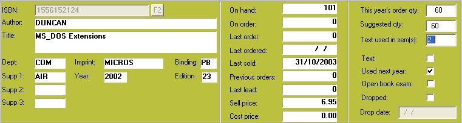

|
Top |

| This year's order qty | The quantity that is to be transferred to the Draft POs when the Text Ordering option is used.
|
| Suggested qty | A quantity suggested by the lecturer, for later comparison with actual sales.
|
| Text used in sem(s) | Information can be entered here as required.
|
| Text | Is this a course text, or just recommended?
|
| Used next year | To give buyers some indication for returns, etc.
|
| Open book exam | Any text used in open-book exams will presumably sell to anyone sitting the exam.
|
| Dropped | When a course is run year in and year out, a record of books previously used is kept. Re-ordering them is prevented (within the Academic module only - copies can still be ordered through Draft Purchase Orders) when this flag is set. Setting the flag causes the current date to be displayed as the Date Dropped but that value can be edited as required.
|